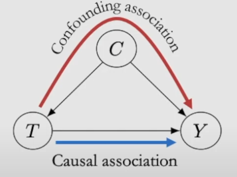
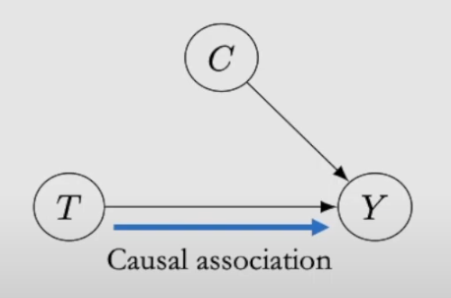
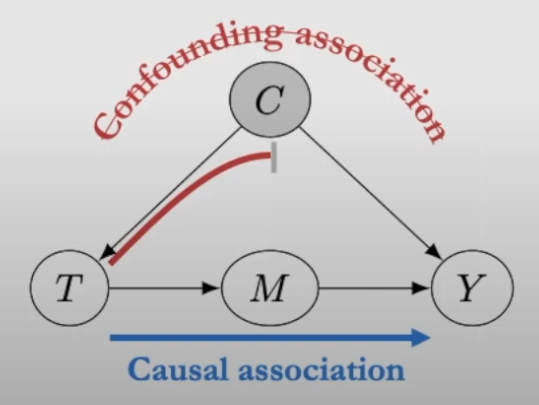
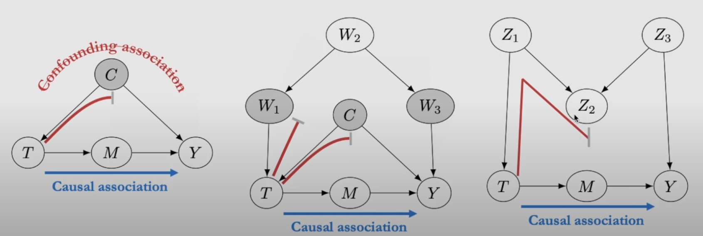
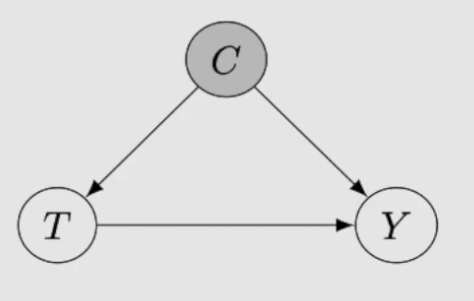

1 What Does Imply Causation?
- Goal of Causal Inference:
- Determine if one thing causes another.
- Estimate the magnitude of the causal effect.
2 Potential Outcomes: Notation
- Definition:
- T: Observed treatment (e.g., taking a pill: T=1 or not taking a pill: T=0).
- Y: Observed outcome (e.g., headache or no headache).
- i: Subscript denotes a specific individual.
- Potential Outcomes:
- Y_i(1): Outcome if the treatment is applied (T = 1).
- Y_i(0): Outcome if the treatment is not applied (T = 0).
2.1 Relationships:
- If T = 1, then:
Y_i \mid \text{do}(T = 1) \triangleq Y_i(1)
- Example: Treatment (taking a pill) leads to no headache.
- If T = 0, then:
Y_i \mid \text{do}(T = 0) \triangleq Y_i(0)
- Example: No treatment (not taking a pill) results in a headache.
2.2 Causal Effect:
- The causal effect for an individual is:
Y_i(1) - Y_i(0)
- This measures the difference in outcomes between receiving treatment (T=1) and not receiving treatment (T=0).
2.3 Potential Outcomes: Key Concept
- Definition:
- Potential outcomes represent what would happen under two scenarios: with or without treatment.
- Notation:
- Y_i(1): Outcome if treatment is applied (e.g., taking a pill).
- Y_i(0): Outcome if treatment is not applied.
- Causal Effect: Y_i(1) - Y_i(0)
- Intuition:
- If Y_i(1) \neq Y_i(0), the treatment has a causal effect.
- Example: If taking a pill cures a headache (Y_i(1) = 0) and not taking it doesn’t (Y_i(0) = 1), the pill has a causal effect.
2.4 Fundamental Problem of Causal Inference
- Issue:
- You can only observe one outcome for an individual:
- If treatment is applied, Y_i(1) is observed, and Y_i(0) is a counterfactual.
- If treatment is not applied, Y_i(0) is observed, and Y_i(1) is a counterfactual.
- This makes it impossible to compute the causal effect Y_i(1) - Y_i(0) directly.
- You can only observe one outcome for an individual:
- Solution:
- Use averages across groups to estimate the Average Treatment Effect (ATE): \text{ATE} = \mathbb{E}[Y(1)] - \mathbb{E}[Y(0)]
2.5 Average Treatment Effect (ATE)
2.5.1 Definitions
- Individual Treatment Effect (ITE): Y_i(1) - Y_i(0)
- Average Treatment Effect (ATE): E[Y_i(1) - Y_i(0)] = E[Y(1)] - E[Y(0)] \neq E[Y \mid T = 1] - E[Y \mid T = 0]
2.5.2 Notations
- T: Observed treatment
- Y: Observed outcome
- i: Denotes a specific unit/individual
- Y_i(1): Potential outcome under treatment
- Y_i(0): Potential outcome under no treatment
- Y(t): Population-level potential outcome
2.5.3 Key Concept
- Causal Graph with Confounding:
- C: Confounder introduces bias
- T: Treatment
- Y: Outcome
- Confounding association: Represented by red arrows
- Causal association: Represented by blue arrow 
- Causal Graph without Confounding (e.g., RCTs):
- No link between C and T
- T directly affects Y 
2.5.4 ATE with and without Confounding
- ATE when confounding exists: E[Y(1)] - E[Y(0)] \neq E[Y \mid T = 1] - E[Y \mid T = 0]
- ATE when no confounding exists (e.g., RCTs): E[Y(1)] - E[Y(0)] = E[Y \mid T = 1] - E[Y \mid T = 0]
2.6 Adjust/Control for Confounders
- Adjust/control for the right variables W.
- If W is a sufficient adjustment set: E[Y(t) \mid W = w] \triangleq E[Y \mid do(T = t), W = w] = E[Y \mid t, w]
- General expectation: E[Y(t)] \triangleq E[Y \mid do(T = t)] = E_W[E[Y \mid t, W]] 
2.7 Backdoor Adjustment
Formula for backdoor adjustment: E[Y \mid do(T = t)] = E_W[E[Y \mid t, W]]
Shaded nodes are examples of sufficient adjustment sets W.

2.7.1 Causal Graph
- Confounding association: Red arrows
- Causal association: Blue arrows
- Variables:
- C: Confounder
- M: Mediator
- T: Treatment
- Y: Outcome
2.8 Application to the COVID-27 Example
2.8.1 Context
This example demonstrates a scenario where the condition is the cause of treatment. The table and calculations highlight the difference between naive and causal estimates of treatment effects when considering confounding due to the condition (Mild or Severe).
2.8.2 Formula for Causal Effect
The causal effect is calculated using the expectation formula: E[Y \mid do(T = t)] = E_C[E[Y \mid t, C]] = \sum_C E[Y \mid t, c] P(c)
2.8.3 Causal Graph
- Variables:
- T: Treatment
- C: Condition (confounder)
- Y: Outcome 
2.8.4 Table: Observed Data and Calculations
| Treatment | Mild | Severe | Total | Causal |
|---|---|---|---|---|
| A | 15% | 30% | 16% | 19.4% |
| (210/1400) | (30/100) | (240/1500) | (1450/2050)(0.15) + (600/2050)(0.30) \approx 0.194 | |
| B | 10% | 20% | 19% | 12.9% |
| (5/50) | (100/500) | (105/550) | (1450/2050)(0.10) + (600/2050)(0.20) \approx 0.129 |
- E[Y | t, C=0]: Observed outcome for Mild condition.
- E[Y | t, C=1]: Observed outcome for Severe condition.
- E[Y | t]: Total observed outcome (weighted average).
- E[Y | do(t)]: Causal treatment effect.
2.8.5 Calculations
- Naive Approach:
- For Treatment A: \text{Naive Effect} = \frac{1400}{1500}(0.15) + \frac{100}{1500}(0.30) = 0.16
- For Treatment B: \text{Naive Effect} = \frac{50}{550}(0.10) + \frac{500}{550}(0.20) = 0.19
- Causal Approach:
- For Treatment A: E[Y \mid do(T=A)] = \frac{1450}{2050}(0.15) + \frac{600}{2050}(0.30) \approx 0.194
- For Treatment B: E[Y \mid do(T=B)] = \frac{1450}{2050}(0.10) + \frac{600}{2050}(0.20) \approx 0.129
2.8.6 Key Insights
- When the condition influences treatment assignment, the naive approach fails to account for this confounding.
- Naive Results:
- Treatment A: 16\%
- Treatment B: 19\%
- Causal Results:
- Treatment A: 19.4\%
- Treatment B: 12.9\%
- Proper adjustment shows that Treatment A is more effective causally, even though naive estimates suggest the opposite.